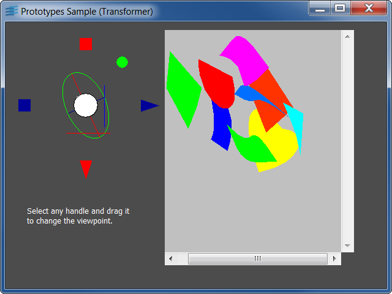

Sophisticated Prototype for an Application ObjectShows how to write a custom graphic inspector for a complex application object.
An IlvView transformer is linked to a Transformer prototype,
using a GroupMediator to allow interactive setting of the view transform.
Shows how to use Event accessors to create complex graphic behaviors.
The associated tutorial shows how to design a prototype
for an application object, structure it properly according
to the Model-View-Controller design pattern, and interface it
to a model application.
IlvGroupMediatorIlvGroup